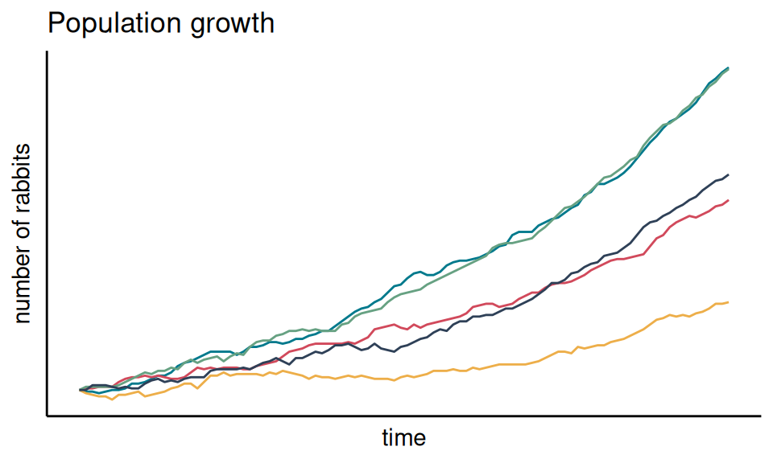

1 Background
1.1 Some motivation
A stochastic process describes the evolution of some phenomenon over time. “Stochastic” is generally used as interchangeable with “random”, indicating that the processes include an element of chance or unpredictability. Note that this does not imply that we have no information whatsoever about the dynamics: a stochastic process typically defines some structure, while allowing for some randomness around that. This makes stochastic processes very widely applicable: in many physical, biological, financial (and other) systems, we know what kind of changes to expect, but not to the point that we could predict their evolution exactly. For example, we might assume that a population increases exponentially, but we couldn’t predict precisely each individual birth and death. This is the stochastic component.
The study of stochastic processes can be viewed as an application of probability theory, and we will use them as probability models. A probability model is a way to define how different quantities are related probabilistically, i.e., through probability distributions rather than deterministic relationships. Our main focus will be on describing such processes as mathematical objects, study their properties, and understand what types of real-world situations they can represent.
Defining a model is a separate question to the problem of statistical analysis and inference, which typically refers to the estimation of the parameters of a probability model from observed data. This will only be a secondary focus in some of the chapters of this course, but it is a very important topic in practice, as it is necessary to use stochastic processes to understand and predict things around us.
We could also think about situations in which stochastic processes are not appropriate. For example, classical mechanics can describe the position of planets over time very precisely, and so there is no need for a probabilistic model.
We will start by reviewing some results from probability theory, that will be useful in later chapters.
1.2 Probability review
Probability is a mathematical tool used to describe randomness. The real-world interpretation of probability and randomness has been a long-standing philosophical question that we will not discuss in this course. Whether we consider that randomness is a feature of the world or that it emerges from our (lack of) knowledge does not affect our study of probability models.
1.2.1 Sample space, events, and so on
Although it is most often implicit in practice (and in this course), the description of probability usually starts from the notion of an experiment, i.e., some procedure with a set of possible outcomes. For example, the experiment could be measuring the length of an object (outcome = positive number), throwing a die (outcome from 1 to 6), a general election (outcome \(\in \{ \text{Conservative Party wins}, \text{Liberal Party wins}, \text{NDP wins}, \dots \}\)), etc.
The sample space \(\Omega\) is the set of all possible outcomes of the experiment, and an element \(\omega \in \Omega\) is called an outcome. A subset of \(\Omega\), \(A \subset \Omega\), is called an event. In the general election example, \(\{ \text{Liberal Party wins}, \text{NDP wins} \}\) is an event.
We can assign a probability \(\Pr(A)\) to each event \(A\). Mathematically, probability is defined by three axioms, that you can easily find online. In practice, we will think of the probability in the common sense, as a measure of uncertainty of the event. Because events are sets, set theory is often a convenient way to think about probability, e.g., using Venn diagrams. For example, this helps formalise ideas such as the intersection of two events (“\(A\) and \(B\)”), the union of two events (“\(A\) or \(B\)”), the complement of an event (“not \(A\)”), etc.
1.2.2 Random variables
The building block of probability models is the random variable, which can be informally defined as a function that associates a numeric value to each possible outcome of a random experiment. We do not know what value the random variable will take before we measure it, but we can quantify the probability of it taking different values. These probabilities define the distribution of the random variable.
If the range of values that the random variable can take is a countable set (such as the integers), then we say that it is a discrete random variable. The distribution of a discrete random variable associates a probability to each number in the range. For example, consider the number of emails that you receive on a given day, which is defined over \(\{ 0, 1, 2, \dots \}\). We don’t know what the number will be in advance, but we might be able to give a probability to each possible value (e.g., the probability of getting 0 emails is 0.01, the probability of getting 1 email is 0.05, and so on). Note that a countable set can be finite (e.g., \(\{ 1, 2, 3, 4, 5, 6 \}\)) or infinite (e.g., \(\mathbb{N}\)).
If the range is uncountably infinite (such as the real line), then the random variable is continuous. The probability that a continuous variable take any given value in the sample space is zero, but we can instead use the probability of falling within some interval. For example, consider the random variable that measures the height of a given student in this class, defined over \(\mathbb{R}^+\) (or arguably some subset of it). Its distribution could be used to make statements such as: the probability of being between 150 and 160 cm is 0.3, the probability of being between taller than 240 cm is \(10^{-10}\), etc.
By definition, the sum of the probabilities of all possible outcomes must equal 1, which implies the following constraints on the probability distribution,
Discrete case: \[ \sum_{x \in \mathcal{S}} \Pr(X = x) = 1; \]
Continuous case: \[ \int_{\mathcal{S}} f_{X}(x)\ dx = 1. \]
It is important to distinguish between a random variable and a realisation from this random variable. The former is defined by a probability distribution, whereas the latter is a single numeric value. It is common to use an uppercase letter to denote a random variable (“\(X\)”) and a lowercase letter to denote its realisations (“\(x\)”).
1.2.3 Basic definitions and properties
The concepts presented above can be used to describe the distribution of a single random variable. To represent real-world systems, however, we usually need several random variables, and we need a way to express relationships between them using the language of probability. In this context, we distinguish between three different types of distributions:
- the joint distribution (multivariate distribution of the random variables);
- the marginal distribution (distribution of one random variable regardless of the other ones);
- the conditional distribution (distribution of one random variable when the other random variables are known).
In this section, we describe conditional probability and conditional distributions in the context of two random variables. Several definitions and properties are presented in three different forms: for two events, for two discrete random variables, and for two continuous random variables. Note that the three formulas need not be memorised separately, as it is easy to go from one to another.
In practice, the “events” that we will study will always be statements about the value of a random variable, e.g., \(X = 1\) or \(1.5 \leq X \leq 2\). This leads us to define the conditional distribution of a random variable given another random variable. For the continuous case, we must first define the joint density function of two random variables.
The notion of “independence” of two random variables has an intuitive interpretation: it asserts that knowing one random variable gives us no information about the other one. For example, if a coin is flipped twice, we usually assume that knowing the outcome of the first flip does not help predict the outcome of the second flip. Two events \(A\) and \(B\) are said to be independent if \(\Pr(A, B) = \Pr(A) \Pr(B)\), and an analogous definition exists for two random variables.
The definition of independence can also be rewritten in terms of conditional probability, which makes the connection to the common language definition of the term more explicit. If \(X\) and \(Y\) are independent then, in the discrete case, \[ \Pr(X = x \mid Y = y) = \Pr(X = x), \] and, in the continuous case, \[ f_{X \mid Y}(x \mid Y = y) = f_X(x). \]
That is, the conditional distribution of \(X \mid Y\) and the marginal distribution of \(X\) are the same. Independence is symmetric, so we could also rewrite this to find that the conditional distribution of \(Y \mid X\) and the marginal distribution of \(Y\) are equal. In both cases, knowing one of the two random variables does not change the distribution of the other one.
The law of total probability is a useful result to obtain the marginal probability of an event, based on conditional probabilities.
The law of total probability can also be written in terms of probability density/mass functions. Let \(X \in \mathcal{S}_X\) and \(Y \in \mathcal{S}_Y\) be two random variables. In the discrete case, we have \[ \Pr(Y = y) = \sum_{x \in \mathcal{S}_X} \Pr(Y = y \mid X = x) \Pr(X = x), \] and, in the continuous case, \[ f_Y(y) = \int_{\mathcal{S}_X} f_{Y \mid X}(y \mid X = x) f_X(x)\ dx, \] for all \(y \in \mathcal{S}_Y\).
A similar result holds for expectations.
That is, the expectation of \(X\) is a weighted sum of the conditional expectations \(E[X \mid B_k]\), where the weights are the probabilities of the events \(B_k\).
1.3 Introducing stochastic processes
We will study discrete-time processes in Chapters 2 and 5, and continuous-time processes in Chapters 3 and 4. In the discrete-time case, we will generally use the letter \(n\) to index time, i.e., we will write the stochastic process as \((X_n)\). Discrete-time processes usually rely on the assumption that the random variables in the sequence are on a regular time grid, and so we almost always define \(n\) over the non-negative integers, so that one time interval corresponds to one unit of time.
The simplest possible stochastic process is a sequence of independent, identically distributed random variables \(\{ X_1, X_2, X_3, \dots\}\), e.g., \(X_t \sim N(0, 1)\). This is not a particularly interesting process, and we will usually focus on cases where there is some dependence between the \(X_t\), as this is key to model the evolution of many real-life phenomena. We will discuss how the dependence can be modelled in later chapters.
We often visualise stochastic processes using line graphs with time on the x axis and the value of the process on the y axis, like in the population modelling example at the beginning of this chapter. The line could for example be obtained by simulating from the stochastic process, or it could be a real data set that we would like to analyse using the stochastic process as a model. Just like it is important to distinguish between a random variable and the value it takes, it is important to separate a stochastic process and the line on that graph. We can think of the stochastic process as the recipe that tells us how to generate the lines. We call each line a realisation, or a sample path, from the stochastic process.
It is important to distinguish between the set over which \(t\) is defined, and the state space \(\mathcal{S}\) over which \(X_t\) is defined. Whether each is discrete or continuous is unrelated, and should be assessed separately.
Example: We can think of situations where either space and/or time should be discrete or continuous.
| discrete time | continuous time | |
|---|---|---|
| discrete space | chess | disease status |
| continuous space | stock price | particle movement |
We will spend more time focusing on discrete-space stochastic processes, as they tend to be a little easier to study, but many of the results can be extended to continuous space.
Note that, while time is always a quantitative (discrete or continuous) variable, \(X_t\) can be:
- qualitative; e.g., “sick”/“healthy”, or position of piece on chess board;
- quantitative discrete; e.g., number of students in a lecture;
- quantitative continuous; e.g., daily temperature.
When the process is qualitative, we usually write \(\mathcal{S} = \{ 0, 1, 2 \dots \}\) for simplicity; you can simply think of \(X_t\) as the random variable that associates a non-negative integer value to each possible category (e.g., “sick” is 0 and “healthy” is 1).